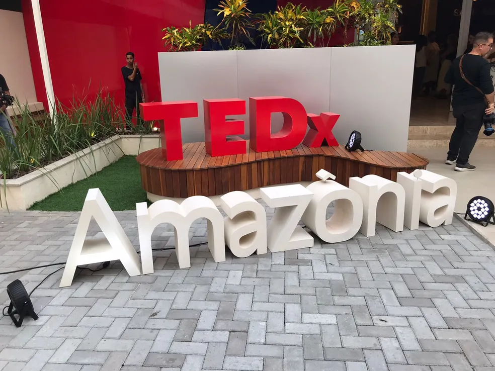

Eventos

Aqui iremos informar os próximos eventos que iram acontecer na Amazônia, eventos que beneficiem, ajudam na preservação ou ajudem economicamente a Amazônia. A sua participação ira ajudar a preservar e também ajudar economicamente.

Bioeconomia, geração de renda e oportunidades, desenvolvimento territorial, ciência, empreendedorismo, arqueologia, direitos da natureza e, claro, temas importantes como a ocupação do território pelas populações locais, combate ao desmatamento e conservação da biodiversidade. Esses são alguns dos assuntos que o TEDxAmazônia vai trazer à tona entre 2 a 5 de novembro, em Manaus, a cidade mais populosa da região amazônica. O evento está de volta 13 anos após uma primeira edição classificada como legendária por membros da comunidade do TED, uma das conferências mais conhecidas do mundo.
A ExpoAmazônia tem como objetivo discutir, integrar, consolidar e alavancar os polos de Bioeconomia e Digitais da região Amazônica como dois vetores econômicos viáveis e sustentáveis para a manutenção da floresta Amazônica e para o desenvolvimento socioeconômico dos povos da Amazônia. O evento também tem o intuito de trazer oportunidades de negócios para esses polos. O evento vai acontecer dia 28 de novembro até dia 30 de novembro
